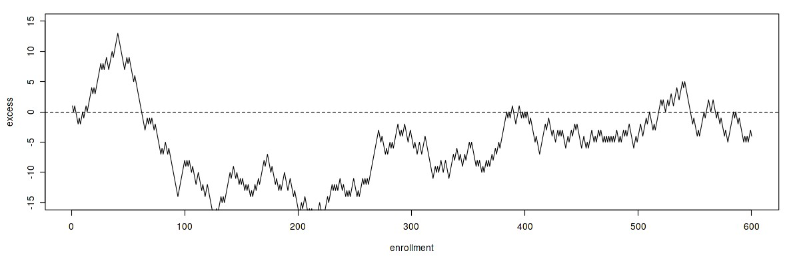
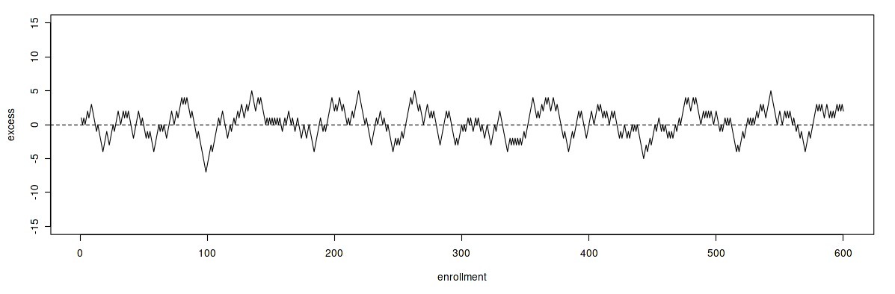

D3 Randomization to reduce bias
Vincent J. Carey, stvjc at channing.harvard.edu
May 22, 2026
Source:vignettes/D3_randomization_bias.Rmd
D3_randomization_bias.Rmd## Warning: multiple methods tables found for 'scale'## Warning: replacing previous import 'BiocGenerics::scale' by
## 'DelayedArray::scale' when loading 'SummarizedExperiment'Blinding and randomization to reduce bias
The concept of the double-blind clinical experiment is well-established
The investigator does not know what treatment has been given to the patient
The patient does not know what drug they have received
This is accomplished by providing treatments that are identical in appearance, taste, etc., but differ in their chemical composition and hypothesized effects. An independent party has knowledge of the treatment that has been administered, and can decode the treatment assignments as needed.
The role of blinding in experimentation is reviewed in a Nature commentary, and the Wikipedia article has many useful references.
Randomization to reduce bias
Once blinding has been accomplished it may seem unnecessary to take further steps to eliminate bias in the evaluation of an experimental comparison.
Blinding helps to eliminate specific forms of bias rooted in (possibly un- or sub-conscious) investigator or participant actions that may affect experimental outcomes or interpretation.
Other forms of bias can be mitigated using random allocation of treatments to participants. As an illustration suppose an investigator decides to use “alternating assignments”, and typically sees two eligible patients a day. We could then have
Day 1 Day 2 Day 3 ....
Treatment A B A B A B
Time of day AM PM AM PM AM PMA problem would arise if the characteristics of patients coming in the morning were different from those coming in the afternoon. For example, the patients arriving in the AM slot could tend to be older. The comparison between treatments A and B would then be confounded with a difference in average ages of patients in the experiment.
If, instead of alternation, the treatment assignment were randomized, the patients receiving treatment A would have characteristics that are on average indistinguishable from those receiving treatment B.
Details of the approach to randomization will have an impact on its effectivness. Challenges can arise in multicenter studies with many centers. The following display plots the excess numbers of patients assigned to one arm in a trial, against the total number enrolled.

Excursions 1
There are long stretches of time during which more patients in the study are receiving one of the treatments than the other.
The use of a different approach to randomization, in which small blocks of allocations are randomized independently, can reduce the size and duration of periods of imbalance over time.

Excursions 2
Randomization is a well-accepted tool in experimental design, but must be conducted with care. The wikipedia article has some interesting references on assessment of the overall effect of use of randomization in health research.